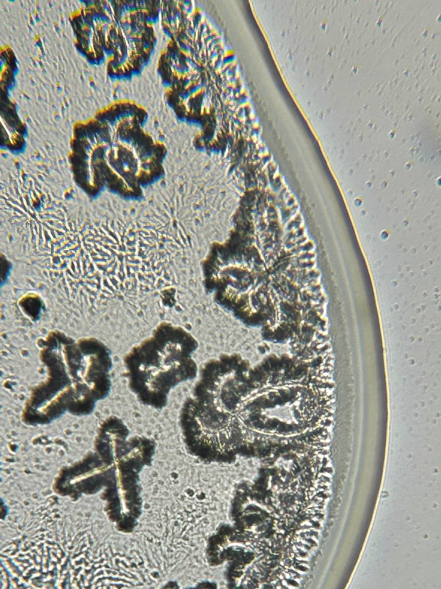

Workshops
To involve citizens and empower patients in the fight against Antimicrobial Resistance (AMR), we propose a framework exploring different strategies and methods of patient and citizen engagement based on the grassroots co-creation of data and information. The first one considers a series of experiential workshops whose formats are designed in collaboration with different experts in the fields of science, communication, and technology. Design strategies, such as data visualisation and physicalisation, are employed to unpack and make the difficult topic of AMR accessible to non-experts. Participants are introduced to antibiotic-correct consumption practices through hands-on activities, scientific tools and protocols meant to raise their interest and involvement. To design the engagement strategy, we rely on experts’ experience in the fields of technology, microbiology, medical anthropology, and biohacking, who brought their knowledge to define different activities.
Design Perspectives on Digital Healthcare
MAKEAWARE! Final Event
As MAKEAWARE! approaches its final phase, this workshop creates a space for reflection on the challenges and insights that have emerged around data collection and use in design practices—particularly within healthcare contexts, by bringing together leading experts in design research, working at the intersection of participatory practices, data ethics, and health.
Read MoreDipLab - Digital Petri Laboratory
w/ Matteo Subet
This workshop offers participants an exciting opportunity to deepen their understanding of antibiotics and antibiotic resistance through the digitization of the antibiogram test, made possible outside of microbiology laboratories. Attendees will be able to broaden their knowledge of antibiotics and antibiotic resistance, and explore the role of these life-saving drugs in modern medicine.
Read MoreOneHealth Datathon
at Novartis Pavilion
Antimicrobial resistance is a global threat that directly or indirectly affects each and every one of us. On the 21st of June, people who experienced antimicrobial resistance, together with healthcare professionals, will be working supported by designers to envision possible technology solutions to the challenge of resistance development.
Read MoreVisualizing the Resistance
w/ Cristina Corti
This workshop proposes an hands-on experience to learn and discover the science around antimicrobial resistance. Starting from scientific contents, the activities will engage the participants in the creation of a collaborative repository of images, resources and stories that will help contributing to the fight against antibiotics misuses and its consequences.
Read MorePerturbant Fluids
w/ Zoe Romano
Perturbant Fluids workshop aims to enhance and disseminate bodily autonomy and rethink possible relationships with the "perturbing" entities that embody us. During this workshop participants will be involved in the discovery of scientific protocols and tools to redefine the way we can contribute and redesign the narrative around science.
Read MoreShape your Symptoms
w/ Ginevra Terenghi
Are you a women and suffer from urinary tract infections (UTIs)? Have you ever experienced urinary tract infections, such as cystitis, or are you chronically affected by this sort of diseases? Did you have any troubles with the treatment? Was the antibiotic not effective or did it cause side effects? Take part in this workshop to support the research.
Read MoreOneHealth Datathon
at Novartis Pavilion
Antimicrobial resistance is a and every one of us. On theperienced antimicrobial resistance, together with healthcare professionals, will be working supported by designers to envision possible technology solutions to the challenge of resistance development.
Read MoreOneHealth Datathon
at Novartis Pavilion
Antimicrobial resistance is a and every one of us. Antimicrobial resistance is a and every one of us. On theperienced antimicrobial resistance, together with healthcare professionals, will be working supported by designers to envision possible technology solutions to the challenge of resistance development.
Read More